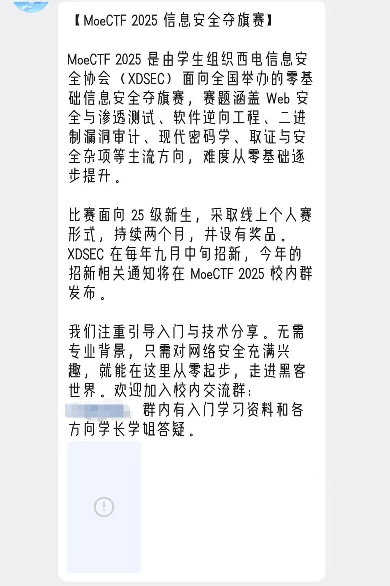

MoeCTF
时间经过：2025.08.09-2025.10.09
那年暑假，我在家玩的正开心，突然在QQ新生群看见了一条广告（
{kind=link}
图片在我清理手机内存的时候，被清掉了（
懵懂的我仔细看了看，便意识到，这个玩意挺好玩，不如参与一下
于是我就兴高采烈地在心里建立起了一个想法：我要开始竞赛了，我太厉害了哈哈哈
（在那之前，“竞赛”对于我其实是一个遥不可及的名词。我只知道竞赛可以提高我自己的能力，竞赛挺好玩，竞赛很有难度。其他的嘛，其实并不是很了解。）
后来，我在MoeCTF官网注册了一个账号，打算动手试一试。看过群文件的入门指北（其实是指南）后，选择了misc（因为这个看起来最简单）。我做了一些练习场上往年的题目，越发觉得这个好有意思啊，虽然很多都不会（
至于再后来2025比赛正式开始的时候，其实我的参与度并不高，因为啥都不会（
很多陌生的词汇概念，都是一点点问deepseek问明白的。每个题的python代码，也是问deepseek一步步调试出来的。不过在这个过程中，我确实学到了很多新的东西，也在脑子里逐渐形成了“喜欢技术”的概念。
我现在还记得，在一个晚上，我走在回家的路上，脑袋里边想的却是刚刚和deepseek的对话。我思考着，什么是虚拟机，什么是wsl2。
多年以后，面对docker，影灭将会回想起MoeCTF带他去见识虚拟机的那个遥远的晚上。
后来开学了，事情就多起来了。另外我还担心下载太多工具弄坏电脑，就没继续做了。最后总排名两千多（
其实这个MoeCTF对于我自己来说，更多的是具有启蒙意义的
除了上面所说的，我在这个过程中逐步意识到了自己对技术的热爱以外，我还第一次感受到了参与技术社群的快乐。（比如说喜欢看群友在QQ群水群）
此外，我还在QQ群文件、MoeCTF官网等等地方知道了不少启蒙性网站，比如
{kind=link}
{kind=link}
{kind=link}
{kind=link}
{kind=link}
{kind=link}
{kind=link}
前段时间MoeCTF2025结束了，我还挺不舍的。虽然一共就在比赛期间靠AI解出了三四道题，一共就在QQ群说了两三句话，但这段经历确实是让我受益匪浅。
回想起来的话，真的蛮感谢高考暑假那个我自己的，看见新鲜事物就敢于挑战，真厉害。
也真的蛮感谢XDSEC全体成员的。是他们把我这个小白，在大学开学之前，就领进了技术的大门
还有互联网上千千万的贡献者，他们写了数不胜数的教程、网站，来引领后来者，却什么都不图，什么都不求。也许这就是互联网精神吧。
伟大，无需多言。